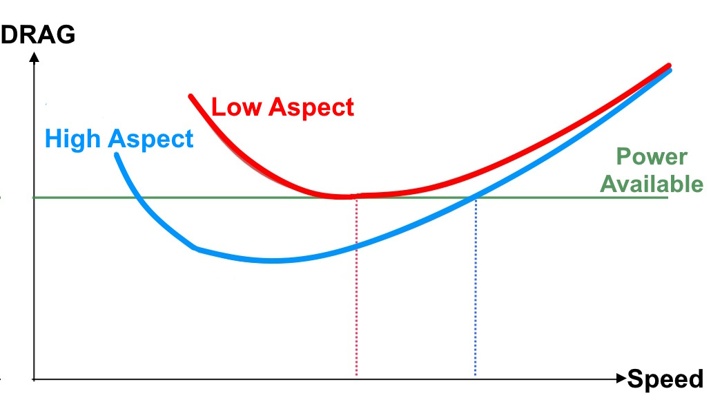

Foil shapes and sizes
On this page we'll look at how foil size and shape affects how they ride, and what they're used for.
Lift
The Lift equation:
- Lift increases as the square of speed
- Lift increases linearly with foil size
- Lift increases with increasing Lift Coefficient (related to Angle of Attack)
Foil size
Foil size relates to the physical area of the foil in cm2. Bigger foils will produce more lift at a given speed and Angle of Attack.
Bigger foils are better for:
- Heavier riders - they need more total lift than lighter riders
- Beginners - they do not have the technique to generate as much speed to take off
- Low power situations - light winds, slow waves etc
Downsides of bigger foils:
- High speed control: As we go faster, lift is increasing as the square of the speed. To keep overall lift constant, the rider needs to reduce Angle of Attack. This is easier at lower speeds, but at higher speeds the Angle of Attack adjustments have to become ever finer, and eventually become so tiny that they are impossible to get right, meaning the foil either breaches or hits the water. This can be a real issue when accelerating down steep wave faces.
- Maneuverability - bigger foils tend to have larger wingspans, so are more difficult to roll
- Maximum speed - they produce more drag, so limit higher speeds
Lift Coefficient
Lift Coefficient versus Angle of Attack:
- The Lift coefficient (cL) increases with increasing Angle of Attack, up to the stall
- Above the stall Angle of Attack lift rapidly drops off
- The steeper the curve pre-stall, the more lift changes with Angle of Attack. This makes the foil feel more "twitchy".
Differently shaped foils will have different graphs of Lift Coefficient vs Angle of Attack. The shape of the graph will affect:
- How much lift it creates at different angles of attack. This in turn affects:
- How easy the foil is to use
- How controllable it is at a range of speeds
- How sudden the stall is
Foil thickness and camber

Combinations of camber and thickness
These two properties affect how much lift and drag a foil produces.
- Thickness is the maximum distance between top and bottom surface
- Camber is the average shape from the front to back of the foil
Although there are slight differences in properties between camber and thickness, we'll simplify things and refer to them as thick or thin foils
- Thin foils tend to look like the thin/low camber profile
- Thick foils tend to look like the thick/high camber profile
Thin and thick foils have different lift characteristics:
Coefficient of Lift for thin and thick foils
From this we can see that:
- A thinner foil will produce less lift than a thicker foil, especially at low Angles of Attack
- A thinner foil will have a bigger speed range, because we can change the Lift Coefficient more
- A thinner foil will require more precise control of Angle of Attack. This makes it feel "twitchy".
- A thicker foil is easier to control for beginners, as lift changes less with Angle of Attack, and the stall is much more gentle
- A thicker foil will have a smaller speed range, because the rider is limited by how much we can change the Lift Coefficient
Aspect Ratio
Aspect ratio is the ratio of wingspan to chord. It is essentially how long and thin a foil is, viewed from above.
Changing the aspect ratio of foil changes both the lift and drag characteristics of the foil. We'll look at the drag later, but focus on the lift for now:
From this, we see that:
- Higher Aspect foils generate more lift at low Angles of Attack (less than 10degrees)
- Higher Aspect foils stall at a lower Angle of Attack, and have a sudden stall
- High Aspect foils require the rider to be more accurate controlling Angle of Attack (they are more "twitchy")
- For these reasons, they are more suited to advanced riders
Drag
We'll now look at how Foil shapes and sizes affect drag
A recap on drag:
Drag versus speed
- There are two types of drag, parasitic and induced
- Total drag is the summation of these two
- Minimum-Drag speed is the speed at which there is the lowest total drag
Bigger foils are going to create more lift and also more drag. So if we want to reduce drag, we can use a smaller foil. This will mean higher minimum and maximum speeds. Is there however, any way to reduce the drag of a foil without reducing size?
Remember, we have two types of drag
Parasitic drag
Parasitic drag is the drag caused by an object travelling through the water. It scales as the square of speed.
It has a few components, but the main one we'll focus on is the front on cross-section. This increases with thickness, and also wingspan
Induced drag
This is the drag caused by creating lift. It is higher at high Angles of Attack (low speed)
We can reduce induced drag by increasing Aspect Ratio. Induced drag scales as 1/AR, so a foil with an Aspect Ratio of 4 will have twice as much induced drag as a foil with an Aspect Ratio of 8
A few years ago, foils were mainly low-Aspect, with Aspect Ratios between 2 and 3. Now, most foils have Aspect Ratios between about 4 and 12
Total drag
Total drag is the summation of these two. Here is what the drag curve looks for a similar sized low and high Aspect Ratio wing:

- The High-Aspect wing has less drag across all speeds, but they are similar at the top end
- With a given amount of power, the High-Aspect foil is faster
- To maintain cruising speed requires less power. This means less pull from a wing, or less power from a wave.
- The High-Aspect foil can keep going with a lower amount of power (e.g. wind lull, low power swell). This is commonly known as glide.
>
High Aspect Foils
Looking at the last chart, we may think that High-Aspect foils are always better. Although excellent for speed and glide there are three downsides to them:
- Harder to use - we've already seen that lift coefficient changes more abruptly with Angle of Attack. This requires finer control.
- A sharp sudden stall
- Maneuverability - higher Aspect ratios need larger wingspans, which makes the foil more difficult to turn.
- High Aspect Foils are often also thin, to reduce Parasitic Drag. Some pump foils are a bit thicker to increase lift.
Mid Aspect Foils
After a move toward ultra High-Aspect foils (AR 10+), there has been a return toward Mid-Aspect Foils, with an AR of about 5 to 8.
Although these lose out on a bit of glide, they are more maneuverable and are easier to use. Again, they can be made thinner or thicker depending on the intended use.
Low Aspect Foils
These are even easier to use, so good for beginners. Expect less glide, less speed, but easy to control and a gentle predictable stall. They are generally thick to help beginners.